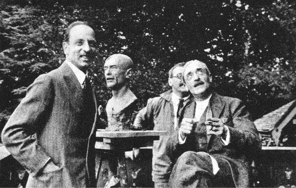
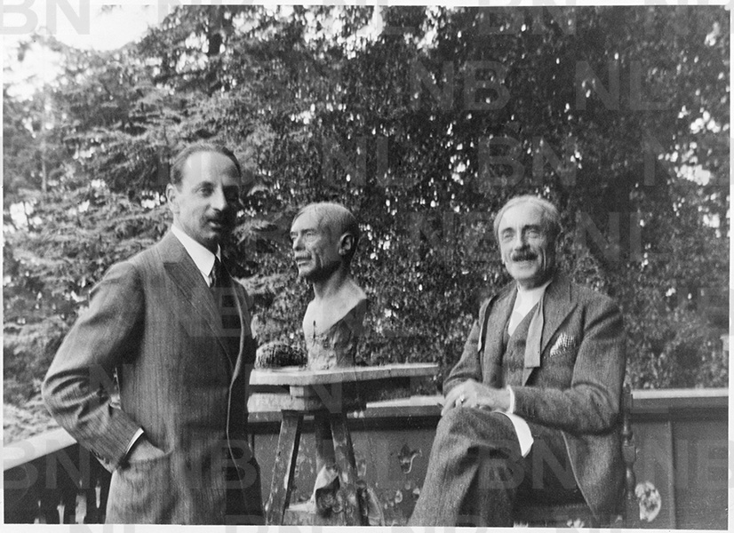

Anthy sur Thonon
„Drogi Rilke! Widzę w nim, kocham w nim najsubtelniejszego i najbardziej uduchowionego z ludzi tego świata, człowieka najgłębiej nawiedzanego przez dziwne lęki i przez wszystkie tajemnice ducha” — pisał Paul Valéry w roku 1927.
Poniżej dwie niezwykłe fotografie wykonane podczas spotkania Rilkego i Paula Valéry w Anthy sur Thonon nad Jeziorem Genewskim dnia 13 września 1926 roku. Dwóch wybitnych poetów gościł wówczas u siebie Julien Monod. Pośrodku widać popiersie Valéry’ego, nad którym pracował w owym czasie rzeźbiarz Henri Vallette.
 